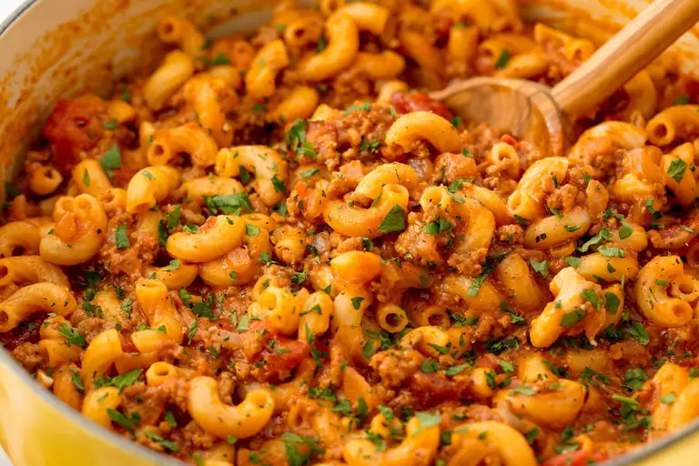

Classic Goulash

Description:
This meaty goulash recipe is easy to make on the stovetop but can also be done in a slow cooker. Inspired by Paula Deen's Bobby's Goulash.
Ingredients
- 1 tablespoon olive oil
- 1 large yellow onion, chopped
- 2 pounds lean ground beef
- 1 cup vegetable broth
- 3 cloves garlic, chopped
- 3 cups water
- 2 (15 ounce) cans tomato sauce
- 2 (14.5 ounce) cans diced tomatoes
- 3 tablespoons soy sauce
- 2 tablespoons dried Italian herb seasoning
- 1 tablespoon seasoned salt, or to taste
- 3 bay leaves
- 2 cups uncooked elbow macaroni
Steps:
- Heat olive oil in a large Dutch oven over medium-high heat. Add onion and cook 3 minutes, stirring often. Add ground beef and cook, breaking up the meat until it is evenly browned, about 5 minutes. Add garlic and cook 3 minutes, stirring often.
- Stir in water, tomato sauce, diced tomatoes, soy sauce, Italian seasoning, seasoned salt, and bay leaves. Bring to a simmer, cover and cook 5 minutes, stirring halfway through.
- Stir in uncooked macaroni, cover, and simmer over medium heat until pasta is tender, 11 to 13 minutes, stirring occasionally. Remove from heat, discard bay leaves, and serve.
All Recipes source